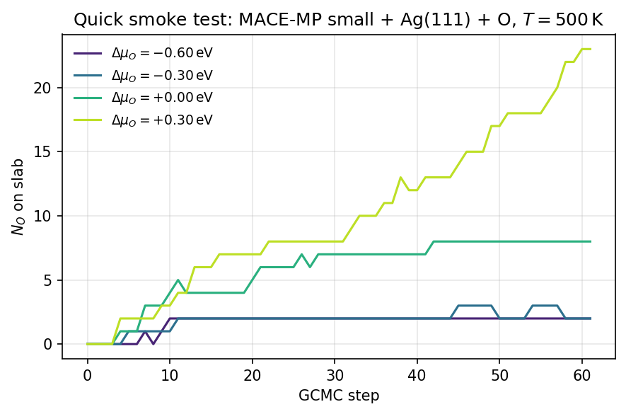

Minimal GCMC on an Ag(111) slab
Shortest possible GCMC example using only EMT, suitable for a quick smoke test of the install. For a calibrated MLIP-based run see Your first simulation and the tutorial in Oxidation phase diagram of a metallic surface.
Goal
Run 500 GCMC steps of oxygen insertion/deletion on a clean Ag(111) slab at \(T = 500\,\mathrm{K}\) and \(\mu_{\mathrm{O}} = -5.0\,\mathrm{eV}\), using EMT so it runs anywhere without GPUs or MACE checkpoints.
Note
EMT is only for plumbing tests — its O–Ag interaction is not physical. Swap in MACE (or any ASE calculator) for production.
Code
import numpy as np
from ase.build import fcc111
from ase.calculators.emt import EMT
from ase.constraints import FixAtoms
from mcpy.calculators import BaseCalculator
from mcpy.cell import CustomCell
from mcpy.ensembles.grand_canonical_ensemble import GrandCanonicalEnsemble
from mcpy.moves import InsertionMove, DeletionMove
from mcpy.moves.move_selector import MoveSelector
atoms = fcc111('Ag', a=4.085, size=(3, 3, 3), vacuum=8.0, periodic=True)
atoms.set_constraint(FixAtoms(indices=[a.index for a in atoms if a.tag == 3]))
cell = CustomCell(
atoms,
custom_height=5.0,
bottom_z=atoms.positions[:, 2].max() + 0.5,
species_radii={'Ag': 2.75, 'O': 0.0},
)
# BaseCalculator wraps an ASE calculator with LBFGS pre-relaxation,
# which is the hybrid-GCMC workflow used throughout mcpy.
calculator = BaseCalculator(calculator=EMT(), steps=20, fmax=0.1)
ss = np.random.SeedSequence(0)
s1, s2 = (int(x) for x in ss.generate_state(2, dtype=np.uint32))
moves = MoveSelector(
[1, 1],
[InsertionMove(cell, species=['O'], min_insert=0.5, seed=s1),
DeletionMove(cell, species=['O'], seed=s2)],
)
gcmc = GrandCanonicalEnsemble(
atoms=atoms,
cells=[cell],
calculator=calculator,
mu={'O': -5.0},
units_type='metal',
species=['O'],
temperature=500.0,
move_selector=moves,
outfile='gcmc_demo.out',
traj_file='gcmc_demo.xyz',
)
gcmc.run(steps=500)
Outputs
gcmc_demo.out— step log with per-move acceptance ratios.gcmc_demo.xyz— extended XYZ trajectory; each frame’s comment line carriesenergy=andLattice=.
What the trajectory looks like
Running the same setup with a MACE-MP small foundation model (in place of EMT) over four \(\Delta\mu_O\) values produces the following coverage trace — each line follows \(N_O\) on the slab as a function of GCMC step:
{kind=link}

NO vs GCMC step at four \(\Delta\mu_O\) values, Ag(111) 3×3×3, \(T = 500\,\mathrm{K}\). More oxidizing conditions (yellow) drive higher coverage; reducing conditions (purple) keep the slab nearly clean.
The four trajectories can be concatenated and fed into the phase-diagram analyzer — see Phase diagram analysis from relaxed trajectories.
Next steps
Replace EMT with a MACE checkpoint: see Your first simulation.
Sweep \(\mu_{\mathrm{O}}\) to build a phase diagram: Oxidation phase diagram of a metallic surface.